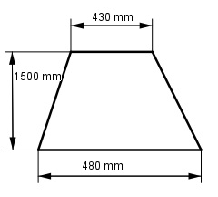

Aufgabe 124 Ein Flugzeug hat ein rechteckiges Prisma als Rumpftank mit den Abmessungen 1 700 mm x 1 000 mm x 500 m und zwei 1 000 mm lange trapezförmige Prismen als Flächentanks, siehe Abbildung. Wie viel Liter Kraftstoff kann es tanken? Wie groß ist sein Aktionsradius bei einem Verbrauch von 4,4 l/km?  1 700 mm = 17 dm 1 000 mm = 10 dm 500 mm = 5 dm VRumpftank = 17 dm * 10 dm * 5 dm = 850 dm³ = 850 l 1 000 mm = 10 dm 1 500 mm = 15 dm 430 mm = 4,3 dm 480 mm = 4,8 dm 4,3 dm + 4,8 dm 2 * VFlächentank = 2 * -------------------- * 15 dm * 10 dm = 1 365 dm³ = 2 = 1 365 l VKraftstoff = 850 l + 1 365 l = 2 215 l 2 215 l Aktionsradius = -------------- = 503,4 km 4,4 l/km